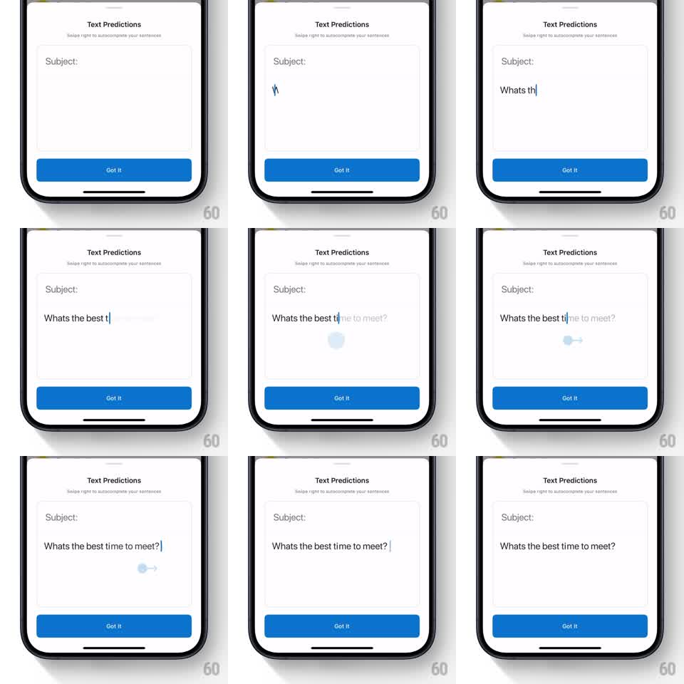

Media
Frame-by-frame

Rebuild this animation 1:1: Outlook's Text Predictions teaching sheet - a bottom sheet that runs a looping self-playing demo: text types itself, a gray completion appears, a simulated finger swipes right, and the suggestion becomes real text.

Rebuild this animation 1:1: Outlook's Text Predictions teaching sheet - a bottom sheet that runs a looping self-playing demo: text types itself, a gray completion appears, a simulated finger swipes right, and the suggestion becomes real text.
## Integration
Integration: stack-agnostic spec - springs given as stiffness/damping, timed motions as duration + curve; map every value to your framework and animation library of choice.
## Scene
Bottom sheet: "Text Predictions" title, "Swipe right to autocomplete your sentences" subline, a mock compose field labeled Subject:, and a blue "Got it" button pinned below.
## Motion spec
Pattern: looping gesture simulation, ~3s per loop.
- The demo text types itself character by character ("Whats the best t", ~60ms per char) with a blinking caret.
- The predicted completion fades in as gray ghost text continuing the sentence ("ime to meet?", 250ms).
- A translucent touch dot appears at the caret, drags right ~60px with a trailing arrow (350ms, ease-out), and on release the ghost text snaps to solid black (instant swap with a 100ms fade).
- The completed sentence holds (~700ms), then the field clears (200ms fade) and the loop restarts.
- Sheet, title, and button stay static throughout.
## Calibration
- Typing speed is brisk but human; machine-gun typing reads as a glitch.
- The swipe is one smooth drag, not a jump - users are learning a gesture, so the finger's path is the lesson.
## Reduced motion
Show the three states as a slow crossfade sequence instead of live typing and dragging.
## Don't miss
- Ghost text must sit exactly where real text will land, same font metrics - a nudge on acceptance breaks trust in the feature.
- The loop is seamless: no visible "replay" reset, just the field emptying.